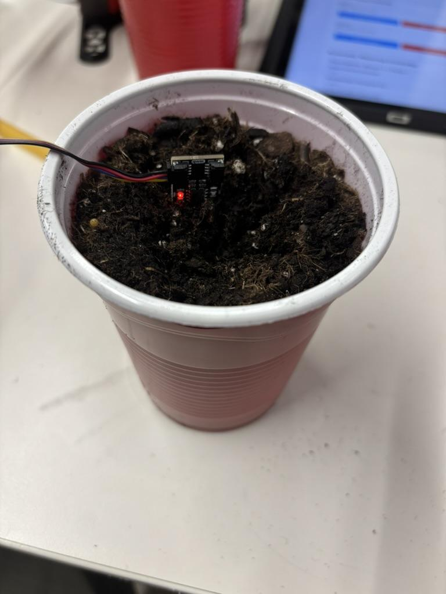

Tutorial 3 — Moisture Sensor Calibration
This calibration procedure determines the correct Soil Moisture Threshold for your specific plant and pot. Complete this once before starting any plant experiment.
Before You Begin
Make sure your potting soil is completely dry before starting. See Appendix ii for instructions on drying soil.
Step 1. Fill a gardening pot to the top with dry potting soil. Note the pot's volume before adding soil.
Step 2. Insert the moisture sensor into the dry soil and record the moisture percentage shown on the AgXRP web interface. Then remove the sensor.
Step 3. Calculate 10% of the pot's volume in milliliters and measure out that amount of water.
Unit Conversion
1 cubic inch (in³) = 16.4 mL
Example: A 100 in³ pot holds 1,640 mL total — add 164 mL of water (10%).
Step 4. Pour the water evenly across the top of the soil. Wait 30–60 minutes for it to absorb fully throughout the pot.
Step 5. Insert the moisture sensor back into the soil and record the new moisture percentage. This value is the optimal watering target for your plants.

Image 23 — Moisture sensor inserted into calibrated soilStep 6. In the web interface, go to Automatic Watering Controller. Enter the value you just recorded in the Soil Moisture Threshold (%) field and click Update Settings.
 Image 24 — Updating the Soil Moisture Threshold in the web interface
Image 24 — Updating the Soil Moisture Threshold in the web interface
Step 7. Allow the system to run and verify the results.
- Monitor the sensor readings to confirm the automation is triggering correctly.
- After the pump runs for the first time, wait an additional 15–30 minutes and check the moisture reading again.
- If the reading is significantly above or below your target, adjust the settings as needed:
- Check Interval — change how often the sensor checks moisture.
- Pump Duration — increase to deliver more water per cycle, decrease to deliver less.
- Pump Effort — adjust motor speed for more or less water flow per second.
Calibration complete! You are now ready to begin your plant experiment.